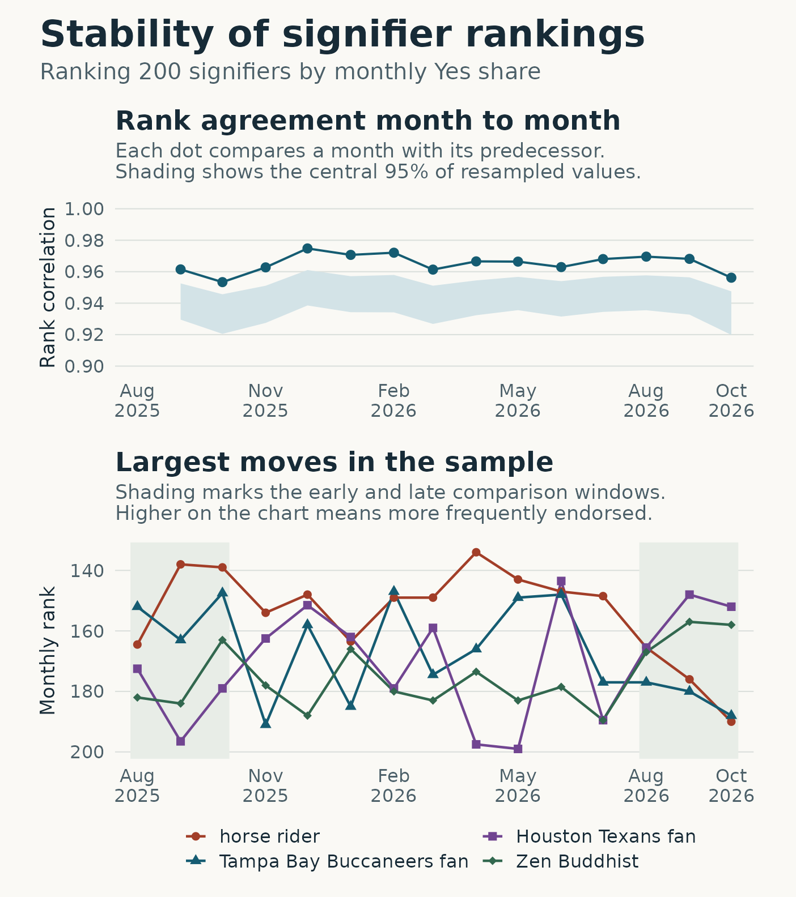

A daily study of the self
How stable are self-description rankings from month to month?

The order of commonly asked signifiers in Ipseity Daily was remarkably steady from month to month. Over a year, some items moved dozens of places. Houston Texans fan gained the most ground, and horse rider fell the farthest. Those moves recurred across the matched months, though the survey left considerable uncertainty about how much endorsement had changed.
How the rankings were built
Ipseity Daily asks samples of American adults whether a word or phrase, called a signifier, describes them that day. For each item, I calculated the share of Yes answers among the people who answered it that month. The survey assigns questions in sets, and an absent answer can mean the item was skipped or never asked. Each completed answer about an item on a given day contributed once to that month’s Yes share.
I kept the same 200 signifiers on the list from August 2025 through October 2026. Each had at least 50 answers from at least 20 respondents in every ranked month. This kept the rankings comparable when the survey asked some other items less often. The analysis excluded the partial months at either end of the snapshot and used the observed days in months with collection gaps.
The ranked sample contained 517,606 answers from 5,128 distinct respondents across 9,418 respondent-days. A respondent-day counts a person once on a date, regardless of how many items they answered. Some respondents participated on multiple dates, so I redrew whole respondents when estimating uncertainty, keeping each person’s answers together across items and months.
The monthly order held up
I ranked the items by Yes share each month and gave ties the average of the positions they occupied. Then I compared neighboring months using Spearman rank correlation, a measure of how closely two lists agree in their ordering. Across 14 comparisons, the median correlation was 0.966. Even the least similar pair, September and October 2025, had a correlation of 0.953. Across individual items and neighboring months, the median move was eight places on the list.
In the top panel, each dot compares a month with the one before it. For each pair, the band shows the middle 95% of its correlations across the respondent redraws. The middle 95% of redraws put the median correlation across all neighboring pairs between 0.939 and 0.948. Redrawing adds variation to both monthly lists and can shuffle items with similar Yes shares. The ordering still held up well under that extra variation.
Which moves stood out over a year?
I compared August through October 2025 with the same calendar months in 2026. I averaged the monthly Yes shares within each window, giving each month equal weight, then ranked the items again. For a move to qualify as sustained, the rank and Yes share had to move in the same direction as the overall shift in each of the three matched months. The change in Yes share across the two windows also had to clear an uncertainty threshold that accounted for checking all 200 signifiers. Checking many items makes it easier to find an apparently large move by chance.
Forty items had ranks and Yes shares that moved in the same direction in every matched month. None had a change in Yes share whose simultaneous 95% confidence interval excluded zero. So the largest moves are examples of what happened in the survey, with uncertain evidence that endorsement shifted over the year.
Houston Texans fan climbed from 191st to 151st as its Yes share rose from 1.7% to 5.5%. Its uncertainty interval ranged from a drop of 4.09 percentage points to a rise of 11.54 points. Horse rider fell from 146th to 180th as its Yes share fell from 6.3% to 2.8%. Its interval ranged from a drop of 9.93 percentage points to a rise of 2.95 points.
The bottom panel traces the monthly ranks of those two items alongside Zen Buddhist, which rose, and Tampa Bay Buccaneers fan, which fell. Shading marks the windows used for the year-over-year comparison. The lines often zigzag between them. Rank depends on where an item sits relative to the others, so a shift of a few percentage points can move an item past many neighbors with similar Yes shares.
What the survey can tell us
The typical item had 90 answers in a month, even though the overall file contained hundreds of thousands of responses. Moreover, the mix of people answering each item can change with survey participation and question assignment. The analysis retained valid answers when demographic information was unavailable. Differences between months can therefore reflect changes in who answered as well as changes in how people describe themselves. The rankings describe Ipseity Daily respondents, and extending them to all U.S. adults would require a sampling design or survey weights that support that inference.
Read the complete R analysis
#!/usr/bin/env Rscript
suppressPackageStartupMessages({
library(tidyverse)
library(Matrix)
library(patchwork)
})
data_path <- Sys.getenv("IPSEITY_DATA_PATH", "data/ipseity.csv.gz")
minimum_answers <- 50L
minimum_respondents <- 20L
bootstrap_draws <- 2500L
confidence <- 0.95
set.seed(20261120)
responses <- read_csv(
data_path,
col_types = cols_only(
endorsed = col_integer(),
signifier = col_character(),
observation_date = col_date(format = "%Y-%m-%d"),
hashed_respondent_id = col_character()
),
na = "",
lazy = FALSE,
progress = FALSE
) |>
rename(date = observation_date, respondent = hashed_respondent_id)
stopifnot(
nrow(problems(responses)) == 0L,
!anyNA(responses),
all(responses$endorsed %in% c(0L, 1L)),
all(nzchar(responses$signifier)),
!anyDuplicated(select(responses, respondent, date, signifier))
)
# Use calendar months contained within the observed date span. Keep months
# with collection gaps and count only the actual answers within them.
first_date <- min(responses$date)
last_date <- max(responses$date)
months <- seq(floor_date(first_date, "month"), floor_date(last_date, "month"),
by = "month")
months <- months[months >= first_date & ceiling_date(months, "month") - 1 <= last_date]
stopifnot(length(months) >= 6L)
early <- seq_len(3L)
late <- tail(seq_along(months), 3L)
stopifnot(all(months[early] %m+% years(1) == months[late]))
complete_month_responses <- responses |>
mutate(month = floor_date(date, "month")) |>
filter(month %in% months)
coverage <- complete_month_responses |>
summarise(
answers = n(),
respondents = n_distinct(respondent),
dates = n_distinct(date),
.by = c(signifier, month)
)
# Set the common item list using coverage alone, and keep it fixed in every
# comparison and resample.
signifiers <- coverage |>
filter(answers >= minimum_answers, respondents >= minimum_respondents) |>
count(signifier, name = "eligible_months") |>
filter(eligible_months == length(months)) |>
arrange(signifier, .locale = "C") |>
pull(signifier)
stopifnot(length(signifiers) >= 3L)
included_coverage <- filter(coverage, signifier %in% signifiers)
included <- filter(complete_month_responses, signifier %in% signifiers)
n_signifiers <- length(signifiers)
n_months <- length(months)
n_cells <- n_signifiers * n_months
respondents <- unique(included$respondent)
n_respondents <- length(respondents)
# Give each answered item one vote on each respondent-day. Summing by
# respondent and item-month lets a single resampling weight follow every
# answer a respondent gave across dates and signifiers.
person_cells <- included |>
mutate(
person = match(respondent, respondents),
cell = match(signifier, signifiers) +
n_signifiers * (match(month, months) - 1L)
) |>
summarise(answers = n(), yes = sum(endorsed), .by = c(person, cell))
answers <- sparseMatrix(
i = person_cells$person, j = person_cells$cell, x = person_cells$answers,
dims = c(n_respondents, n_cells)
)
yes <- drop0(sparseMatrix(
i = person_cells$person, j = person_cells$cell, x = person_cells$yes,
dims = c(n_respondents, n_cells)
))
as_monthly <- function(cell_shares) {
matrix(cell_shares, nrow = n_signifiers, ncol = n_months)
}
rank_months <- function(shares) {
apply(-shares, 2L, rank, ties.method = "average")
}
adjacent <- seq_len(n_months - 1L)
agreement <- function(ranks) {
# Pearson correlation of two rank vectors is Spearman rank correlation.
cor(ranks)[cbind(adjacent, adjacent + 1L)]
}
window_shares <- function(shares) {
# Equal weight for each calendar month within each window.
cbind(earlier = rowMeans(shares[, early]), later = rowMeans(shares[, late]))
}
shares <- as_monthly(colSums(yes) / colSums(answers))
ranks <- rank_months(shares)
correlations <- agreement(ranks)
rank_movements <- abs(ranks[, adjacent + 1L] - ranks[, adjacent])
period_shares <- window_shares(shares)
period_ranks <- rank_months(period_shares)
share_change <- period_shares[, 2L] - period_shares[, 1L]
rank_change <- period_ranks[, 1L] - period_ranks[, 2L]
annual_share_moves <- shares[, late] - shares[, early]
annual_rank_moves <- ranks[, early] - ranks[, late]
all_months_up <- rowSums(annual_share_moves > 0 & annual_rank_moves > 0) == length(early)
all_months_down <- rowSums(annual_share_moves < 0 & annual_rank_moves < 0) == length(early)
# Sample the observed unique respondents with replacement. Multiplicity is
# shared across all months and items. Batching keeps matrix memory bounded.
correlation_draws <- matrix(NA_real_, nrow = bootstrap_draws, ncol = length(adjacent))
change_draws <- matrix(NA_real_, nrow = bootstrap_draws, ncol = n_signifiers)
rank_change_draws <- matrix(NA_real_, nrow = bootstrap_draws, ncol = n_signifiers)
successful_draws <- 0L
empty_cell_draws <- 0L
while (successful_draws < bootstrap_draws) {
batch_size <- min(50L, bootstrap_draws - successful_draws)
weights <- replicate(
batch_size,
tabulate(sample.int(n_respondents, replace = TRUE), nbins = n_respondents)
)
batch_answers <- as.matrix(crossprod(answers, weights))
batch_yes <- as.matrix(crossprod(yes, weights))
for (draw in seq_len(batch_size)) {
if (any(batch_answers[, draw] == 0)) {
empty_cell_draws <- empty_cell_draws + 1L
next
}
draw_shares <- as_monthly(batch_yes[, draw] / batch_answers[, draw])
draw_period_shares <- window_shares(draw_shares)
draw_period_ranks <- rank_months(draw_period_shares)
successful_draws <- successful_draws + 1L
correlation_draws[successful_draws, ] <- agreement(rank_months(draw_shares))
change_draws[successful_draws, ] <- draw_period_shares[, 2L] - draw_period_shares[, 1L]
rank_change_draws[successful_draws, ] <- draw_period_ranks[, 1L] - draw_period_ranks[, 2L]
}
}
central_range <- function(draws) {
tails <- (1 - confidence) / 2
quantile(draws, c(tails, 1 - tails), names = FALSE, type = 8)
}
pair_intervals <- apply(correlation_draws, 2L, central_range)
rank_move_ranges <- apply(rank_change_draws, 2L, central_range)
median_correlation_interval <- central_range(apply(correlation_draws, 1L, median))
# A single cutoff from the largest absolute standardized error in each
# resample yields simultaneous intervals for the whole set of share changes.
change_se <- apply(change_draws, 2L, sd)
centered <- sweep(change_draws, 2L, share_change, "-")
standardized <- sweep(centered, 2L, if_else(change_se > 0, change_se, Inf), "/")
max_error <- apply(abs(standardized), 1L, max)
cutoff <- quantile(max_error, confidence, names = FALSE, type = 8)
share_lower <- share_change - cutoff * change_se
share_upper <- share_change + cutoff * change_se
changes <- tibble(
signifier = signifiers,
early_share = period_shares[, 1L],
late_share = period_shares[, 2L],
share_change, share_lower, share_upper,
early_rank = period_ranks[, 1L],
late_rank = period_ranks[, 2L],
rank_change,
rank_lower = rank_move_ranges[1L, ],
rank_upper = rank_move_ranges[2L, ],
matches_each_month = (rank_change > 0 & all_months_up) |
(rank_change < 0 & all_months_down),
sustained = (rank_change > 0 & all_months_up & share_lower > 0) |
(rank_change < 0 & all_months_down & share_upper < 0)
) |>
arrange(desc(abs(rank_change)), desc(abs(share_change)), signifier, .locale = "C")
sustained <- filter(changes, sustained)
figure_items <- sustained |>
group_by(direction = sign(rank_change)) |>
slice_head(n = 2L) |>
ungroup()
if (nrow(figure_items) == 0L) {
figure_items <- changes |>
filter(rank_change != 0) |>
group_by(direction = sign(rank_change)) |>
slice_head(n = 2L) |>
ungroup()
}
summarise_sample <- function(data) {
summarise(
data,
answers = n(),
respondent_days = n_distinct(respondent, date),
respondents = n_distinct(respondent),
dates = n_distinct(date)
)
}
count_text <- function(x) {
formatC(x, format = "d", big.mark = ",")
}
sample_line <- function(data, label) {
sample <- summarise_sample(data)
sprintf(
"%s: %s answers; %s respondent-days; %s distinct respondents; %s dates.",
label, count_text(sample$answers), count_text(sample$respondent_days),
count_text(sample$respondents), count_text(sample$dates)
)
}
limits_line <- function(values, label) {
sprintf(
"%s (minimum / median / maximum): %g / %g / %g.",
label, min(values), median(values), max(values)
)
}
month_labels <- format(months, "%Y-%m")
by_month <- included |>
group_by(month) |>
summarise_sample() |>
arrange(month)
pair_table <- tibble(
earlier = month_labels[adjacent],
later = month_labels[adjacent + 1L],
month = months[adjacent + 1L],
correlation = correlations,
lower = pair_intervals[1L, ],
upper = pair_intervals[2L, ],
median_move = apply(rank_movements, 2L, median)
)
write_lines(
c(
"Monthly signifier rankings",
sprintf("Snapshot date range: %s to %s.", first_date, last_date),
sample_line(responses, "Snapshot"),
sprintf("Signifiers in the snapshot: %s.", count_text(n_distinct(responses$signifier))),
sprintf("Ranked calendar months: %d, %s to %s.", n_months, first(month_labels),
last(month_labels)),
sprintf("Fixed list: %d signifiers with at least %d answers and %d respondents in every ranked month.",
n_signifiers, minimum_answers, minimum_respondents),
sample_line(included, "Ranked sample"),
sprintf(
"Ranked respondents who answered on multiple dates: %s.",
count_text(nrow(filter(count(distinct(included, respondent, date), respondent), n > 1L)))
),
limits_line(included_coverage$answers, "Answers per signifier-month"),
limits_line(included_coverage$respondents, "Distinct respondents per signifier-month"),
limits_line(included_coverage$dates, "Observed dates per signifier-month"),
"",
"Analyzed answers, respondent-days, unique respondents and dates by month",
sprintf("%s: %s / %s / %s / %s", format(by_month$month, "%Y-%m"),
count_text(by_month$answers), count_text(by_month$respondent_days),
count_text(by_month$respondents), count_text(by_month$dates)),
"",
sprintf("Respondent resamples: %s usable draws; %s omitted for an empty item-month.",
count_text(bootstrap_draws), count_text(empty_cell_draws)),
sprintf("Adjacent-month comparisons: %d.", length(adjacent)),
sprintf(
"Median adjacent Spearman correlation: %.3f; central %.0f%% resampling range %.3f to %.3f.",
median(correlations), 100 * confidence,
median_correlation_interval[1L], median_correlation_interval[2L]
),
sprintf("Adjacent Spearman correlations: lowest %.3f (%s to %s), highest %.3f (%s to %s).",
min(correlations), pair_table$earlier[which.min(correlations)],
pair_table$later[which.min(correlations)], max(correlations),
pair_table$earlier[which.max(correlations)], pair_table$later[which.max(correlations)]),
sprintf("Median absolute move over all adjacent signifier-month pairs: %g rank positions.",
median(rank_movements)),
"",
"Adjacent pair | Spearman correlation [pointwise resampling range] | median absolute rank move",
sprintf("%s to %s | %.3f [%.3f, %.3f] | %g",
pair_table$earlier, pair_table$later, pair_table$correlation,
pair_table$lower, pair_table$upper, pair_table$median_move),
"",
sprintf("Year-over-year windows: %s to %s versus %s to %s (%d calendar months each).",
month_labels[first(early)], month_labels[last(early)],
month_labels[first(late)], month_labels[last(late)], length(early)),
sample_line(filter(included, month %in% months[early]), "Earlier window"),
sample_line(filter(included, month %in% months[late]), "Later window"),
sprintf("Confidence level for simultaneous share-change intervals: %.0f%%.",
100 * confidence),
sprintf("Same-direction rank and share moves in every matched month: %d signifiers.",
sum(changes$matches_each_month)),
sprintf("Window share changes with simultaneous intervals excluding zero: %d signifiers.",
sum(changes$share_lower > 0 | changes$share_upper < 0)),
sprintf("Sustained shifts: %d signifiers (%d rose, %d fell).",
nrow(sustained), sum(sustained$rank_change > 0), sum(sustained$rank_change < 0)),
paste("Figure signifiers:", paste(figure_items$signifier, collapse = ", ")),
"",
"Window changes sorted by absolute rank move",
"Positive rank moves indicate greater popularity. Window shares weight months equally.",
"Signifier | early to late rank (move) [pointwise resampling range] | early to late Yes share | change in points [simultaneous interval] | rank and share agree in every matched month | sustained",
sprintf("%s | %g to %g (%+g) [%+.1f, %+.1f] | %.1f%% to %.1f%% | %+.2f [%+.2f, %+.2f] | %s | %s",
changes$signifier, changes$early_rank, changes$late_rank, changes$rank_change,
changes$rank_lower, changes$rank_upper,
100 * changes$early_share, 100 * changes$late_share, 100 * changes$share_change,
100 * changes$share_lower, 100 * changes$share_upper,
if_else(changes$matches_each_month, "yes", "no"),
if_else(changes$sustained, "yes", "no")),
"",
"Matched months for figure signifiers | early rank to late rank | early to late Yes share",
unlist(map(figure_items$signifier, function(signifier) {
item <- match(signifier, signifiers)
sprintf("%s, %s to %s | %g to %g | %.1f%% to %.1f%%",
signifier, month_labels[early], month_labels[late],
ranks[item, early], ranks[item, late],
100 * shares[item, early], 100 * shares[item, late])
}), use.names = FALSE)
),
"results.txt"
)
paper <- "#FAF9F5"
ink <- "#172B37"
muted <- "#4C6069"
grid <- "#DBE0DC"
date_ticks <- months[c(seq(1L, n_months - 2L, by = 3L), n_months)]
plot_theme <- theme_minimal(base_size = 16) +
theme(
text = element_text(colour = ink),
plot.background = element_rect(fill = paper, colour = NA),
panel.grid.minor = element_blank(),
panel.grid.major.x = element_blank(),
panel.grid.major.y = element_line(colour = grid, linewidth = 0.4),
axis.text = element_text(colour = muted, size = 13),
axis.title = element_text(size = 14),
plot.title = element_text(face = "bold", size = 19, margin = margin(b = 5)),
plot.subtitle = element_text(colour = muted, size = 14, margin = margin(b = 13)),
plot.margin = margin(12, 17, 10, 15),
legend.position = "bottom",
legend.text = element_text(size = 13)
)
month_axis <- scale_x_date(
name = NULL, breaks = date_ticks, date_labels = "%b\n%Y",
limits = c(first(months) - 16, last(months) + 16),
expand = expansion(mult = 0)
)
agreement_plot <- ggplot(pair_table, aes(x = month, y = correlation)) +
geom_ribbon(aes(ymin = lower, ymax = upper), fill = "#D3E3E7") +
geom_line(colour = "#155C72", linewidth = 0.75) +
geom_point(colour = "#155C72", size = 2.7) +
month_axis +
scale_y_continuous(
"Rank correlation", breaks = scales::breaks_pretty(n = 4),
labels = scales::label_number(accuracy = 0.01)
) +
coord_cartesian(ylim = c(min(0.90, floor(20 * min(pair_table$lower)) / 20), 1)) +
labs(
title = "Rank agreement month to month",
subtitle = "Each dot compares a month with its predecessor.\nShading shows the central 95% of resampled values."
) +
plot_theme
trajectories <- expand_grid(
signifier = factor(figure_items$signifier, levels = figure_items$signifier),
month = months
) |>
mutate(rank = ranks[cbind(match(signifier, signifiers), match(month, months))])
rank_plot <- ggplot(trajectories, aes(month, rank, colour = signifier)) +
annotate(
"rect",
xmin = months[c(first(early), first(late))] - 5,
xmax = months[c(last(early), last(late))] + 5,
ymin = -Inf, ymax = Inf, fill = "#E8EDE7"
) +
geom_line(linewidth = 0.85) +
geom_point(aes(shape = signifier), size = 2.5) +
month_axis +
scale_y_reverse("Monthly rank", breaks = scales::breaks_pretty(n = 5)) +
scale_colour_manual(NULL, values = c("#A23E28", "#155C72", "#714591", "#32684F")) +
scale_shape_manual(NULL, values = c(16, 17, 15, 18)) +
guides(colour = guide_legend(nrow = 2), shape = guide_legend(nrow = 2)) +
labs(
title = if (nrow(sustained) > 0L) "Clearest sustained moves" else "Largest moves in the sample",
subtitle = "Shading marks the early and late comparison windows.\nHigher on the chart means more frequently endorsed."
) +
plot_theme +
theme(legend.margin = margin(t = -3, b = 2))
figure <- (agreement_plot / rank_plot) +
plot_layout(heights = c(1, 1.25)) +
plot_annotation(
title = "Stability of signifier rankings",
subtitle = sprintf("Ranking %d signifiers by monthly Yes share", n_signifiers),
theme = theme(
plot.background = element_rect(fill = paper, colour = NA),
plot.title = element_text(colour = ink, face = "bold", size = 26, margin = margin(b = 6)),
plot.subtitle = element_text(colour = muted, size = 16, margin = margin(b = 7)),
plot.margin = margin(14, 13, 5, 13)
)
)
ggsave("visualization.png", figure, width = 7.8, height = 8.8, dpi = 180, bg = paper)
Original research prompt
How stable is the popularity ranking of commonly asked signifiers from month to month, and which signifiers have experienced the clearest sustained changes?
Dataset SHA-256: 9d876e7755198144adcb39b2ad5bee754fa2ec9f5d1ebbf3078bfe2fe4d546af